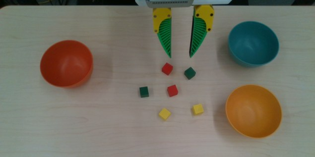
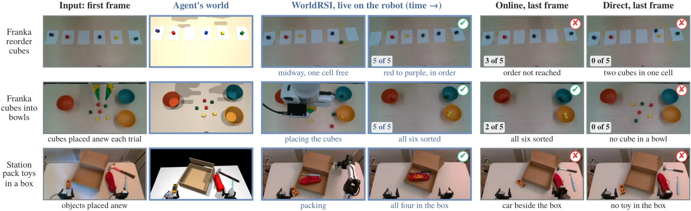
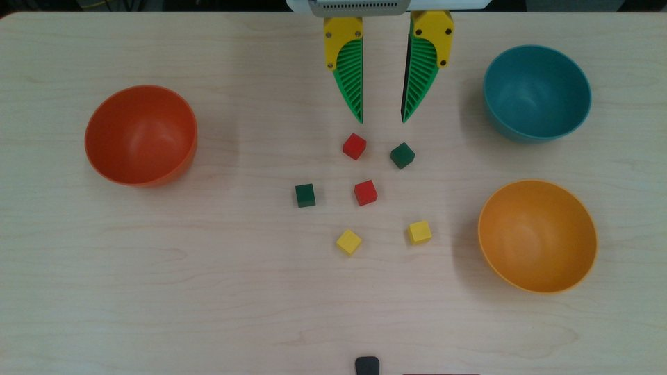
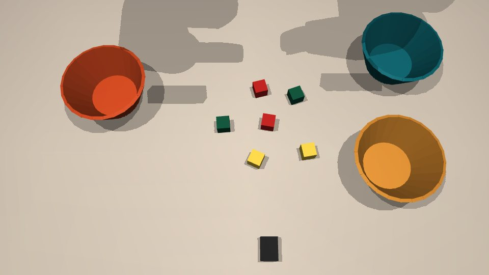
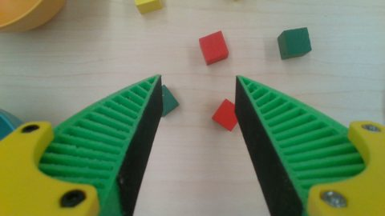

WorldRSI: Robot Agents That Build Worlds to Improve Themselves
1Tulane 2UCSD 3UNC 4UMich

 Real first frame
Agent's world
Real first frame
Agent's world
The world it builds
From the first camera frames alone, the agent builds a physics simulation of the scene and rehearses the task there before it acts on the real robot. Drag across the image to compare.
Abstract
Large multimodal models can now control robots as agents that read camera images and write code, with no task-specific training. Yet in a new scene such an agent sees only a few frames and gets a single attempt. A program written once from these frames breaks when the scene differs, and an agent that acts live discovers each mistake only after it has cost real steps.
We present WorldRSI, in which the agent rehearses in a world it builds before acting. It turns the first frames into a physics simulation, runs the task there and in perturbed copies, and writes what it learns into a harness, a playbook of steps, checks and repairs that a new agent follows on the real robot. On 640 held-out scenes of three robustness benchmarks built on LIBERO, WorldRSI raises Claude Opus 5.5 from 63.3% for a program written once and 67.8% for a live agent to 79.7%, and to 83.6% when rehearsal starts from a harness improved on earlier tasks, ahead of a fine-tuned π0.5 policy (72.7%). The gains hold for three agent models and carry over to bimanual and mobile manipulation and to two physical robots. On a Franka arm, WorldRSI succeeds in all 10 trials, against 5 for a live agent and 0 for a program written once.
Stage 1. The agent sees only the first frames of a new scene.
640 held-out scenes
Success with Claude Opus 5.5, LIBERO-PRO, LIBERO-Plus and LIBERO-MAX.
On physical robots
Two robots that differ in arms, cameras and calibration. The Franka FR3 arm has a side and a wrist camera with only their intrinsics known, so the harness first calibrates the side camera from the gripper. The bimanual station has two 6-DoF arms and three RGB cameras without depth. On both, the objects are placed anew after the input frames, so the agent's world is never exact.
Successes on the robots
Franka: five trials per task with the objects placed anew, every failure counts. Station: completed or not.
Franka arm. WorldRSI succeeds in all 10 trials, against 5 for Online and none for Direct, and reorders the cubes in 4.4 minutes per trial against 8.2 for Online, with fewer robot commands and about a third of the input tokens. On the bowls the cubes never sit where the world put them, so what carries over is the procedure in the harness, not the positions.
Bimanual station. GPT-6 Astra runs the live stage at half speed. WorldRSI completes four of the six tasks, each time re-measuring the new placement as its harness prescribes. On the packing task, Online released the car beside the box and pushed the box, which the task forbids, and Direct placed no toy in the box.

Full episodes on the bimanual station
Overview camera and both wrist cameras, condensed, about two minutes each. The live agent follows the harness from its rehearsal and re-measures the new placement before it acts.
Plug in a charger. The agent first rotates the power strip, then uses a wrist camera as a side view to align the plug.
Pack four toys into a box with a given orientation, without pushing the box.
Press buttons by number. Press each button as many times as its card shows.
Cover and uncover blocks with upside-down cups, then uncover them in a given color order.
How it works
People prepare for a hard task in a safe place first. A surgeon rehearses a difficult operation, and a mover measures the staircase before carrying a sofa. What they take back is not a motion to replay but knowledge: what to check first, what can go wrong and what to do then.
WorldRSI gives a robot agent such a place, a simulation it builds from the first frames, and makes rehearsal produce knowledge rather than a policy. Only the harness reaches the real robot, where a new agent follows it while watching the cameras, so the world never has to be exact. Below, one real run on the Franka arm: put each cube into the bowl of its color.


Side camera, first frame
wrist cameraHarness: harness.md
Run each phase as one script, read what it prints, look at the cameras, then decide.
- 0Record the start posture0
- 1Calibrate the side camera from the fingertips~250
- 2Locate every cube and bowl~30
- 3Survey with the wrist camera, refit the side camera~470
- 4–9One cube per script, wrist re-centred before grasp and release~280 each
- 10Open, back to the start posture~50
About 2,650 of 12,000 steps in all. Up to three tries per cube. With fewer than 600 steps left, it stops repairing and finishes.
- a check of what to see
- repairs if it fails
- its share of the steps
- the side camera's pose
- the wrist camera's mount
- how a cube lands in a real bowl
Meta Harness
Because a harness holds knowledge rather than motions, it carries over to new tasks. A Meta Harness, improved beforehand on separate development tasks, first in worlds the agent built and then on development scenes, gives every rehearsal a better start (WorldRSI-Meta).
WorldRSI-Continuous
Along a sequence of tasks, each agent hands the reusable part of its harness to the next: skills, lessons, runnable plans and a recipe for building the world. Rehearsal then needs fewer tool calls from the second task on, and each task costs about 18% less.
Results
Held-out scenes of three robustness benchmarks built on LIBERO, never used during development and fixed by a script before any method ran on them. LIBERO-PRO and LIBERO-Plus change objects, layouts, instructions, viewpoints, lighting and sensor noise, and LIBERO-MAX also changes the scene during execution. Direct and Online use the same agent and the same interface, so the only difference is the rehearsal.
640 held-out scenes, Claude Opus 5.5
Success rate, one episode per scene. π0.5 is fine-tuned on LIBERO's demonstrations of the base tasks of all three benchmarks. Show-Harness is a zero-shot VLM harness run from its released code with the same model, in its most favorable setting.
Show all numbers
| Method | MAX 200 | PRO 160 | Plus 280 | All 640 |
|---|
Scenes that change during execution
The gains are largest where a program written from the first frames must break. When LIBERO-MAX moves the target or the receptacle as the gripper approaches, Direct succeeds in 3.8% and 11.5% of the scenes, WorldRSI in 57.7% and 69.2%.
Success (%) by the event LIBERO-MAX applies during execution. Gain: WorldRSI minus Direct, in points.
Beyond one model and one benchmark
Why rehearsal helps
A better world gives a better live run
Live success by how close the agent's world places the objects, on average.
Fewer surprises on the robot
A live agent without rehearsal most often runs out of steps. Failed episodes by kind:
More reliable
Two runs on the same scene disagree less often. Both runs of WorldRSI succeed on 73% of the scenes.
Less time on the robot
Minutes in the live stage, with fewer robot steps (222 against 248). On the Franka arm, 4.4 minutes against 8.2.
Worlds the agent built
Each world is built from the first frames of one scene. It only has to be good enough to rehearse in, because the live agent re-measures the real scene as its harness prescribes.

Citation
@misc{zhang2026worldrsi,
title = {WorldRSI: Robot Agents That Build Worlds to Improve Themselves},
author = {Zhang, Yunbei and Li, Yijiang and Wang, Janet and Yang, Yue and
Meng, Peilin and Luo, Yunhao and Hamm, Jihun and Vasconcelos, Nuno},
year = {2026},
url = {https://worldrsi.github.io}
}